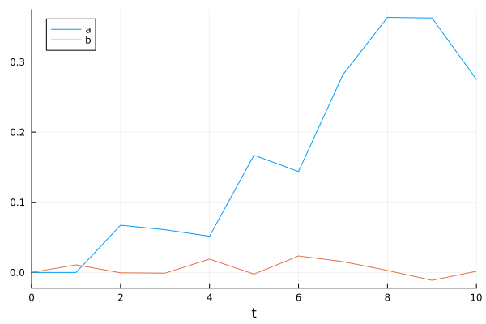
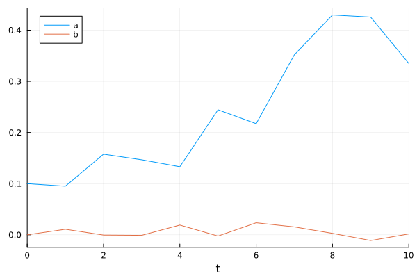
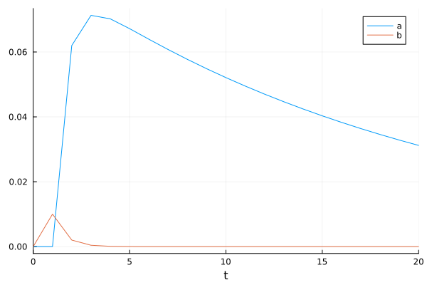
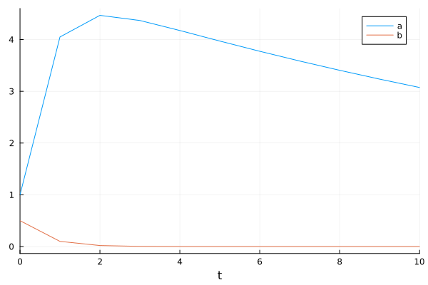
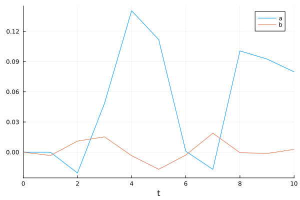
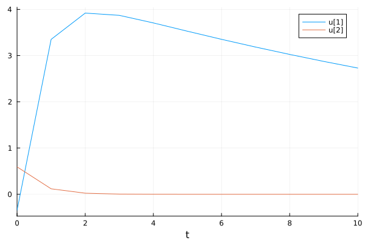
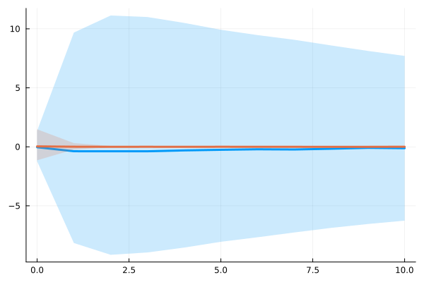

Linear Simulation
This tutorial walks through simulating a linear time-invariant state-space model of the form
\[u_{n+1} = A \, u_n + B \, w_{n+1}\]
with observation equation
\[z_n = C \, u_n + v_n\]
where $w_{n+1} \sim N(0, I)$ and optionally $v_n \sim N(0, D)$.
Simulating a Linear State Space Model
We begin by defining system matrices and creating a LinearStateSpaceProblem. Passing C enables the observation equation, observables_noise adds Gaussian measurement noise to the simulated observations, and syms attaches symbolic names to the state variables.
using DifferenceEquations, LinearAlgebra, Distributions, Random, Plots, DiffEqBase
A = [0.95 6.2; 0.0 0.2]
B = [0.0; 0.01;;]
C = [0.09 0.67; 1.00 0.00]
D = Diagonal([0.1, 0.1])
u0 = zeros(2)
T = 10
prob = LinearStateSpaceProblem(A, B, u0, (0, T); C, observables_noise = D, syms = (:a, :b))
sol = solve(prob)retcode: Success
Interpolation: Piecewise constant interpolation
t: 0:1:10
u: 11-element Vector{Vector{Float64}}:
[0.0, 0.0]
[0.0, 0.010864953108763429]
[0.06736270927433326, -0.0005029679604792061]
[0.06087617245564551, -0.0010093050756063387]
[0.05157467236410393, 0.019046531850597362]
[0.16708443621960237, -0.0024204072556209336]
[0.14372368942377245, 0.023472073749148063]
[0.2820643621973018, 0.015402197060868419]
[0.3634547658648209, 0.0028022540187648006]
[0.36265600248792157, -0.011189169847397276]
[0.2751503493096623, 0.0016877612842091257]Plotting
The solution object integrates with Plots.jl recipes. When syms are provided, the legend labels correspond to those names.
plot(sol)
Accessing the Solution
The state trajectory is stored in sol.u as a Vector{Vector}. Standard indexing works on the solution object directly.
sol.u # full state trajectory, Vector{Vector}11-element Vector{Vector{Float64}}:
[0.0, 0.0]
[0.0, 0.010864953108763429]
[0.06736270927433326, -0.0005029679604792061]
[0.06087617245564551, -0.0010093050756063387]
[0.05157467236410393, 0.019046531850597362]
[0.16708443621960237, -0.0024204072556209336]
[0.14372368942377245, 0.023472073749148063]
[0.2820643621973018, 0.015402197060868419]
[0.3634547658648209, 0.0028022540187648006]
[0.36265600248792157, -0.011189169847397276]
[0.2751503493096623, 0.0016877612842091257]Access a specific time step:
sol[2] # state at t=1 (second entry; sol[1] is the initial condition u₀)2-element Vector{Float64}:
0.0
0.010864953108763429Or a specific element of the last state:
sol[end][1] # first element of the final state0.2751503493096623Observations and noise are also available:
sol.z # observed trajectory, Vector{Vector}11-element Vector{Vector{Float64}}:
[-0.011568505389937393, 0.08797096378070897]
[0.15825203421264317, -0.10909979347162153]
[0.0691335313147593, 0.3582940231941278]
[0.28081311751084226, 0.23160808499327393]
[-0.42822838695664994, -0.25600460607039366]
[0.13797274288514233, 0.2647640470552523]
[0.18228223127131357, 0.28713121109020634]
[-0.0236977358107915, -0.14341574617981911]
[0.39192904731940725, 0.612912938163959]
[0.5567014457185484, 0.6040792224212953]
[-0.3291403802246482, 0.523148307779815]sol.W # realized noise sequence, Vector{Vector}10-element Vector{Vector{Float64}}:
[1.0864953108763429]
[-0.2675958582231892]
[-0.09087114835104974]
[1.9248392865718627]
[-0.6229713625740406]
[2.395615520027225]
[1.0707782311038807]
[-0.027818539340888356]
[-1.1749620651150237]
[0.3925595253688581]Symbolic Indexing
When syms are provided, you can extract the full time series for a state variable by name:
sol[:a] # time series for state variable :a11-element Vector{Float64}:
0.0
0.0
0.06736270927433326
0.06087617245564551
0.05157467236410393
0.16708443621960237
0.14372368942377245
0.2820643621973018
0.3634547658648209
0.36265600248792157
0.2751503493096623If obs_syms are also provided, observation variables can be accessed similarly:
prob_obs = LinearStateSpaceProblem(A, B, u0, (0, T); C, observables_noise = D,
syms = (:a, :b), obs_syms = (:output, :consumption))
sol_obs = solve(prob_obs)
sol_obs[:output] # time series for observation :output11-element Vector{Float64}:
0.021429043213837914
-0.7630870009747499
0.22595545111508403
0.11296117750966526
0.48231560224444936
-0.12030698062220549
-0.10045911545712713
0.3281066062170264
0.07959469142194636
0.3022739399344329
-0.2125473960161219Fixed Noise
We can extract the noise from a previous simulation and use it to reproduce a trajectory (possibly with different initial conditions). This is essential for joint likelihood computations.
noise = sol.W # extract realized noise (Vector{Vector})
u0_new = [0.1, 0.0]
prob_fixed = LinearStateSpaceProblem(A, B, u0_new, (0, T); C, observables_noise = D,
syms = (:a, :b), noise)
sol_fixed = solve(prob_fixed)
plot(sol_fixed)
Impulse Response Functions
An impulse response function (IRF) applies a one-time unit shock at the first period and traces the system's response. We construct this by passing a fixed noise sequence where only the first entry is nonzero.
function irf(A, B, C, T = 20)
noise = [[i == 1 ? 1.0 : 0.0] for i in 1:T]
problem = LinearStateSpaceProblem(A, B, zeros(2), (0, T); C, noise, syms = (:a, :b))
return solve(problem)
end
plot(irf(A, B, C))
Deterministic Dynamics (B = nothing)
When the model has no process noise, pass B = nothing. The solver will skip noise generation entirely. No sol.W is produced.
prob_det = LinearStateSpaceProblem(A, nothing, [1.0, 0.5], (0, T); C, syms = (:a, :b))
sol_det = solve(prob_det)
sol_det.W === nothing # no noise generatedtrueplot(sol_det)
No Observation Equation (C = nothing)
When you only need the state trajectory and don't require observations, omit C (or pass C = nothing). No sol.z is produced.
prob_no_obs = LinearStateSpaceProblem(A, B, u0, (0, T); syms = (:a, :b))
sol_no_obs = solve(prob_no_obs)
sol_no_obs.z === nothing # no observationstrueplot(sol_no_obs)
Random Initial Conditions
Passing a Distribution for u0 draws a random initial state at each solve.
u0_dist = MvNormal([1.0 0.1; 0.1 1.0]) # zero-mean Gaussian
prob_rand = LinearStateSpaceProblem(A, nothing, u0_dist, (0, T); C)
sol_rand = solve(prob_rand)
plot(sol_rand)
Ensemble Simulations
The SciML EnsembleProblem interface runs many independent simulations in parallel. Each trajectory draws a fresh initial condition (when u0 is a distribution) and/or fresh noise. EnsembleSummary computes quantile bands across the ensemble.
trajectories = 50
prob_ens = LinearStateSpaceProblem(A, B, u0_dist, (0, T); C)
ensemble_sol = solve(EnsembleProblem(prob_ens), DirectIteration(), EnsembleThreads();
trajectories)
summ = EnsembleSummary(ensemble_sol)
plot(summ)